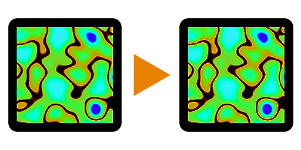

Sharpen

In: Atomic Nodes
Description
The Sharpen Node perform a sharpening operation on an input. It is a useful node for applying that final touch of crispness to an image.
It is mathematically very similar to Photoshop's Unsharp Mask, despite the name being different. It works well for things like a Basecolor map, but should be avoided on maps like Normal maps and Metallic maps.
Inputs
Input Color/Grayscale (Primary)
The image which should be sharpened.
Parameters
Intensity Float
Sets the intensity of the sharpening effect.
Punchthrough Alpha Boolean (Available when a color image is connected to the Input)
Determines whether the image's alpha channel should be sharpened or left untouched.
Examples
